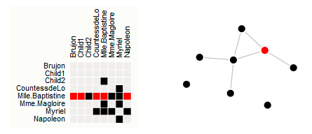
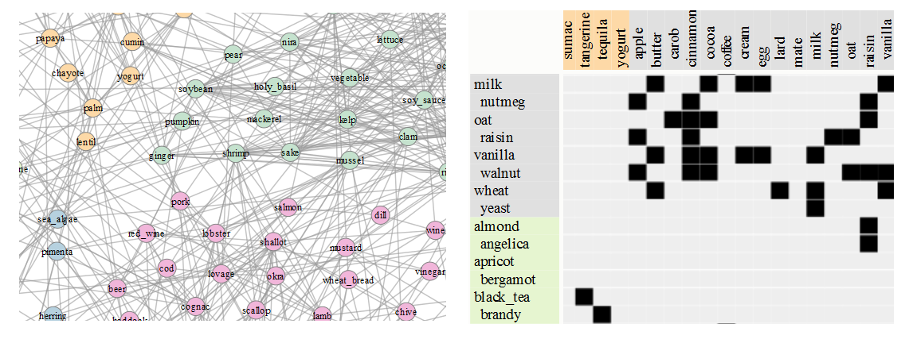

Installation instructions
-
VisUnit uses Java Servlets and Java on the backend, as such it will run on
a webserver that supports Java such as Apache Tomcat Server. Download and install Apache Tomcat.
-
VisUnit uses "R" statistical package for the statistical analysis of the results.
Download and Install the
"R" statistical package.
-
Ensure "R" can be accessed from the terminal. For example if you type R on a Unix terminal or on a Windows command prompt
, the version of R installed should be displayed.
NB: Without R only the "Results analysis" functionality will be affected.
Examples of user studies
-
This study evaluates how people judge the size of shapes in rectangles and treemaps and is very similar
to a study performed in Crowdsourcing graphical perception: using mechanical turk to assess visualization design.
This study that does not use a dataset, but uses static images as stimuli.
Click image below to see demo of the study

See how this study was designed
-
A study that uses a dataset. See demo of the study.
This study compares nodelinks to matrices and is very similar to a study performed in
A Comparison of the Readability of Graphs Using Node-Link and Matrix-Based Representations
Click image below to see demo of the study

See how this study was designed
-
A study that uses a dataset and interactive answers
See demo of the study.
This study compares nodelinks to matrices and its a variation of the
study performed in
A Comparison of the Readability of Graphs Using Node-Link and Matrix-Based Representations
.
Here participants provide answers by interacting with the visualization.
We will use the following steps to design the study assuming we have the Nodelink and Matrix visualizations.

See how this study was designed